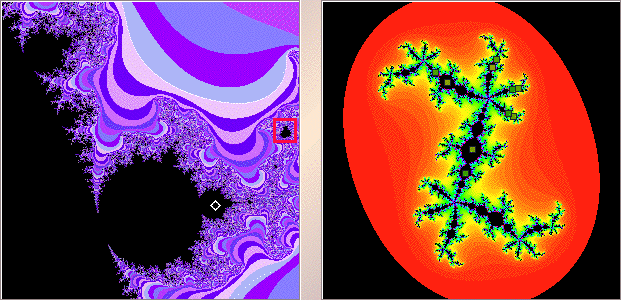

|  |
| The left window shows a magnification of a portion of the quadratic Mandelbrot set. The white diamond indicates we have selected a point in a disc attached to a disc attached to the cardioid. |
| In the right window, shift-click or right click near |
| We obtain a |
| Click the red box for a magnification of that box. |
Return to Samples.